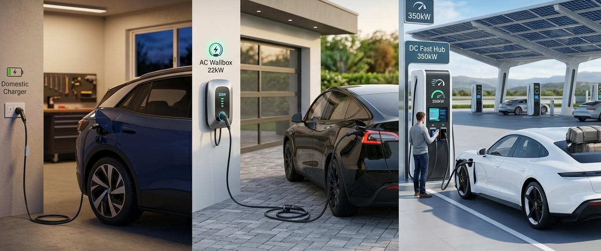
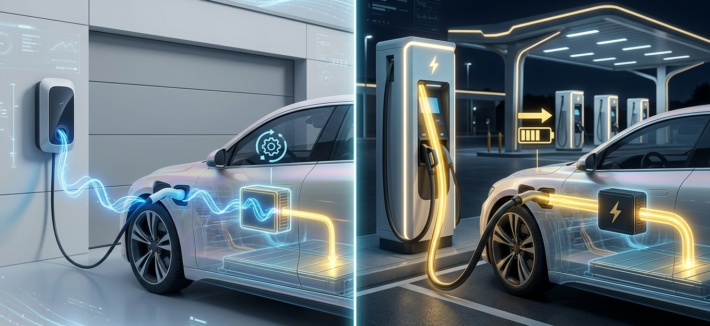
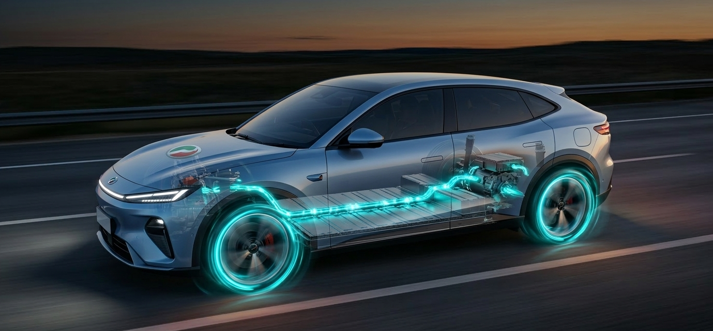

Current, Charging, and Energy Flow in Electric Vehicles
A clear understanding of current types, charging methods, and energy flow is essential for interpreting how electric vehicles (EVs operate. These concepts form the foundation of EV charging systems and propulsion processes. Rather than requiring advanced engineering knowledge, understanding the basic principles of electricity and energy conversion provides sufficient insight into how EV charging infrastructure and vehicle systems function.
Alternating Current and Direct Current
The operation of EV charging systems is fundamentally based on the distinction between Alternating Current (AC) and Direct Current (DC). Alternating current is the form of electricity commonly supplied to residential and commercial buildings through national power grids. In Malaysia, electricity delivered by the national utility provider is transmitted as AC because alternating current is efficient for long-distance power transmission.
Direct current, in contrast, flows in a single direction and is more suitable for energy storage. Electric vehicle batteries store energy exclusively in the form of direct current. This distinction explains why electrical conversion processes are necessary during EV charging. When electricity is supplied in AC form, it must be converted into DC before it can be stored in the vehicle’s battery system.

Types of EV Charging Systems
EV charging infrastructure can generally be categorized into three commonly used charging methods: the portable household charger, the AC wallbox charger, and the DC fast charger. Each charging method differs in terms of power output, charging duration, and intended usage context.
The portable household charger typically connects to a standard 13-amp domestic socket and provides power output of approximately 2.0 to 2.3 kilowatts. Due to the relatively low power level, charging through this method occurs at a slower rate. Depending on the capacity of the vehicle’s battery, a full charging cycle may require several hours or longer. As a result, this method is generally considered suitable for occasional or supplementary charging rather than routine daily charging.
The AC wallbox charger represents a more practical long-term solution for residential charging. Wallbox systems commonly operate at power levels such as 7 kW, 11 kW, or 22 kW, allowing vehicles to be recharged more efficiently than through a standard household socket. Under typical conditions, an EV can be recharged within several hours using a wallbox system, making it suitable for overnight charging. Installation by qualified professionals is usually required to ensure electrical safety and proper integration with household electrical systems.
The DC fast charger operates at substantially higher power levels, commonly ranging from approximately 50 kW to over 350 kW depending on the charging station. These systems are designed to recharge a vehicle’s battery significantly faster, often replenishing the battery to approximately 80 percent capacity within 20 to 60 minutes. Charging speed generally decreases after this level in order to protect battery health and manage thermal conditions. DC fast charging is therefore most commonly used in public charging stations and for long-distance travel rather than routine daily charging.

AC and DC Charging Processes
The difference between AC and DC charging lies primarily in where the conversion from AC to DC occurs. During AC charging—such as when using a portable charger or wallbox—the electricity supplied to the vehicle is in AC form. Because the high-voltage battery requires DC electricity, the conversion process must occur within the vehicle itself. This conversion is performed by the On-Board Charger (OBC), which converts AC electricity into DC before it is stored in the battery.
In contrast, DC fast charging performs the conversion process within the charging station rather than inside the vehicle. The charging station converts AC electricity from the grid into DC and then delivers DC power directly to the vehicle’s battery. As a result, the vehicle’s onboard charger is bypassed during DC charging.
Energy Flow During Vehicle Operation
Once energy is stored in the high-voltage battery, it can be used to power the vehicle during driving. The battery supplies electrical energy in the form of direct current. However, the electric motor that propels the vehicle typically operates using alternating current. This difference requires an additional conversion step.
The inverter performs this function by converting DC electricity from the battery into AC electricity suitable for the motor. The electric motor then converts this electrical energy into mechanical energy, generating the torque required to move the vehicle. The rotational energy produced by the motor is subsequently regulated by the reducer, which adjusts the motor’s high rotational speed into usable torque before transferring power to the wheels.

Regenerative Braking
Electric vehicles also incorporate a process known as regenerative braking, which enables partial recovery of energy during vehicle deceleration. When the driver releases the accelerator or applies the brakes, the electric motor operates as a generator. Instead of consuming electrical energy, the motor converts the vehicle’s kinetic energy into electrical energy.
During this process, the generated electricity flows back through the inverter. The inverter converts the generated AC electricity into DC electricity so that it can be stored once again within the high-voltage battery. Through regenerative braking, electric vehicles are able to recover a portion of energy that would otherwise be lost as heat during braking in conventional vehicles.
Integrated Energy Flow in Electric Vehicles
Across charging, driving, and regenerative braking, electric vehicle systems operate through a continuous process of energy storage, conversion, and redistribution. Electrical energy is stored in the high-voltage battery as direct current, converted and regulated through electronic control systems, and ultimately transformed into mechanical motion by the electric motor. During regenerative braking, a portion of this energy cycle is reversed, allowing energy to be recovered and stored again within the battery.
Understanding this flow of energy provides a coherent framework for interpreting electric vehicle technology and highlights the fundamental differences between electrified propulsion systems and conventional internal combustion vehicle designs

Arus Elektrik, Pengecasan dan Aliran Tenaga dalam Kenderaan Elektrik
Pemahaman yang jelas mengenai jenis arus elektrik, kaedah pengecasan, dan aliran tenaga adalah penting untuk memahami bagaimana kenderaan elektrik (EV) beroperasi. Konsep-konsep ini membentuk asas kepada sistem pengecasan dan proses pergerakan kenderaan elektrik. Tanpa memerlukan pengetahuan kejuruteraan yang mendalam, pemahaman asas tentang prinsip elektrik dan penukaran tenaga sudah memadai untuk menjelaskan bagaimana infrastruktur pengecasan EV dan sistem kenderaan berfungsi.
Arus Ulang-Alik dan Arus Terus
Operasi sistem pengecasan EV secara asasnya bergantung kepada perbezaan antara Arus Ulang-Alik (AC) dan Arus Terus (DC). Arus ulang-alik ialah bentuk elektrik yang biasanya dibekalkan kepada rumah dan bangunan komersial melalui grid tenaga negara. Di Malaysia, elektrik yang dibekalkan oleh penyedia utiliti nasional dihantar dalam bentuk AC kerana arus ulang-alik lebih cekap untuk penghantaran tenaga jarak jauh.
Arus terus pula mengalir dalam satu arah sahaja dan lebih sesuai untuk penyimpanan tenaga. Bateri kenderaan elektrik menyimpan tenaga secara eksklusif dalam bentuk arus terus. Perbezaan ini menjelaskan mengapa proses penukaran elektrik diperlukan semasa pengecasan EV. Apabila elektrik dibekalkan dalam bentuk AC, ia perlu ditukar kepada DC sebelum boleh disimpan dalam sistem bateri kenderaan.
Jenis Sistem Pengecasan EV
Infrastruktur pengecasan EV secara umum boleh dikategorikan kepada tiga kaedah pengecasan yang sering digunakan: pengecas mudah alih rumah, pengecas wallbox AC, dan pengecas pantas DC. Setiap kaedah pengecasan berbeza dari segi kuasa output, tempoh pengecasan, dan konteks penggunaan.
Pengecas mudah alih rumah biasanya disambungkan kepada soket domestik standard 13 amp dan menghasilkan kuasa sekitar 2.0 hingga 2.3 kilowatt. Disebabkan tahap kuasa yang agak rendah, proses pengecasan melalui kaedah ini berlaku dengan lebih perlahan. Bergantung kepada kapasiti bateri kenderaan, satu kitaran pengecasan penuh boleh mengambil masa beberapa jam atau lebih lama. Oleh itu, kaedah ini biasanya sesuai untuk pengecasan sekali-sekala atau sebagai sokongan tambahan, bukan untuk penggunaan harian utama.
Pengecas wallbox AC pula merupakan penyelesaian yang lebih praktikal untuk pengecasan jangka panjang di rumah. Sistem wallbox biasanya beroperasi pada tahap kuasa seperti 7 kW, 11 kW, atau 22 kW, membolehkan kenderaan dicas dengan lebih cekap berbanding menggunakan soket rumah biasa. Dalam keadaan biasa, EV boleh dicas sepenuhnya dalam beberapa jam menggunakan sistem wallbox, menjadikannya sesuai untuk pengecasan semalaman. Pemasangan oleh juruteknik bertauliah biasanya diperlukan bagi memastikan keselamatan elektrik dan integrasi yang betul dengan sistem elektrik rumah.
Pengecas pantas DC beroperasi pada tahap kuasa yang jauh lebih tinggi, biasanya bermula sekitar 50 kW sehingga melebihi 350 kW bergantung kepada stesen pengecasan. Sistem ini direka untuk mengecas bateri kenderaan dengan lebih cepat, selalunya mampu mencapai sekitar 80 peratus kapasiti bateri dalam tempoh 20 hingga 60 minit. Kelajuan pengecasan biasanya akan berkurang selepas tahap ini bagi melindungi kesihatan bateri dan mengawal keadaan haba. Oleh itu, pengecasan pantas DC lebih kerap digunakan di stesen pengecasan awam dan semasa perjalanan jarak jauh, bukan untuk pengecasan harian biasa.
Proses Pengecasan AC dan DC
Perbezaan antara pengecasan AC dan DC terletak terutamanya pada lokasi proses penukaran daripada AC kepada DC. Semasa pengecasan AC — seperti menggunakan pengecas mudah alih atau wallbox — elektrik yang dibekalkan kepada kenderaan adalah dalam bentuk AC. Oleh kerana bateri voltan tinggi memerlukan elektrik dalam bentuk DC, proses penukaran perlu berlaku di dalam kenderaan itu sendiri. Penukaran ini dilakukan oleh On-Board Charger (OBC), yang menukar elektrik AC kepada DC sebelum disimpan dalam bateri.
Sebaliknya, pengecasan pantas DC melakukan proses penukaran tersebut di dalam stesen pengecasan dan bukannya di dalam kenderaan. Stesen pengecasan menukar elektrik AC daripada grid kepada DC dan kemudian menghantar kuasa DC secara terus kepada bateri kenderaan. Oleh itu, pengecas onboard kenderaan tidak digunakan semasa pengecasan DC.
Aliran Tenaga Semasa Operasi Kenderaan
Setelah tenaga disimpan dalam bateri voltan tinggi, tenaga tersebut boleh digunakan untuk menggerakkan kenderaan semasa pemanduan. Bateri membekalkan tenaga elektrik dalam bentuk arus terus (DC). Namun begitu, motor elektrik yang menggerakkan kenderaan biasanya beroperasi menggunakan arus ulang-alik (AC). Perbezaan ini memerlukan satu lagi proses penukaran.
Inverter melaksanakan fungsi ini dengan menukar elektrik DC daripada bateri kepada elektrik AC yang sesuai untuk motor. Motor elektrik kemudian menukar tenaga elektrik ini kepada tenaga mekanikal yang menghasilkan tork untuk menggerakkan kenderaan. Tenaga putaran yang dihasilkan oleh motor kemudiannya dikawal oleh reducer, yang menyesuaikan kelajuan putaran tinggi motor kepada tork yang boleh digunakan sebelum kuasa dipindahkan ke roda.
Brek Regeneratif
Kenderaan elektrik juga menggunakan proses yang dikenali sebagai brek regeneratif, yang membolehkan sebahagian tenaga dipulihkan semasa kenderaan memperlahankan kelajuan. Apabila pemandu melepaskan pedal pemecut atau menekan brek, motor elektrik akan berfungsi sebagai generator. Daripada menggunakan tenaga elektrik, motor akan menukar tenaga kinetik kenderaan kepada tenaga elektrik.
Dalam proses ini, elektrik yang dijana akan mengalir kembali melalui inverter. Inverter akan menukar elektrik AC yang dihasilkan kepada DC supaya ia boleh disimpan semula dalam bateri voltan tinggi. Melalui brek regeneratif, kenderaan elektrik mampu memulihkan sebahagian tenaga yang sebaliknya akan hilang sebagai haba semasa proses membrek dalam kenderaan konvensional.
Integrasi Aliran Tenaga dalam Kenderaan Elektrik
Sepanjang proses pengecasan, pemanduan, dan brek regeneratif, sistem kenderaan elektrik beroperasi melalui satu kitaran berterusan penyimpanan, penukaran, dan pengagihan semula tenaga. Tenaga elektrik disimpan dalam bateri voltan tinggi dalam bentuk arus terus, ditukar dan dikawal melalui sistem elektronik, dan akhirnya ditukar kepada pergerakan mekanikal oleh motor elektrik. Semasa brek regeneratif, sebahagian daripada kitaran tenaga ini diterbalikkan, membolehkan tenaga dipulihkan dan disimpan semula dalam bateri.
Pemahaman tentang aliran tenaga ini memberikan gambaran menyeluruh tentang teknologi kenderaan elektrik serta menonjolkan perbezaan asas antara sistem pendorongan elektrik dan reka bentuk kenderaan enjin pembakaran dalaman konvensional.